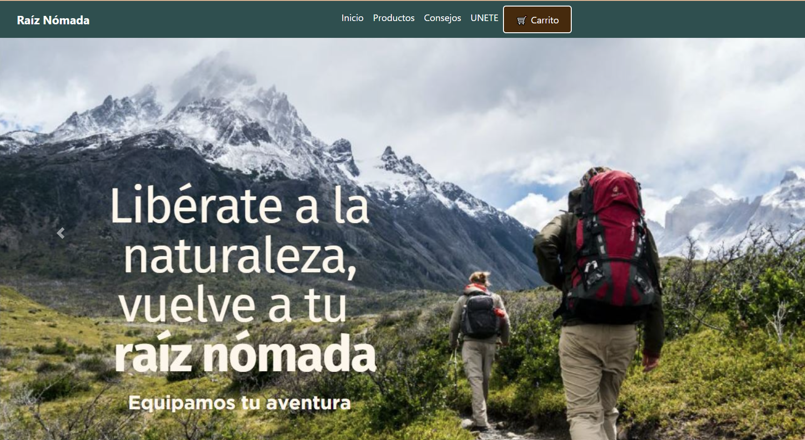

Landingpage Raíz Nómada
Landingpage Raíz Nómada
Como pate de un Hackaton interno en el Bootcamp de Generation, se diseño una landingpage de tema tienda deportiva, a partir de esto decidimos por un tema de senderismo, alpinismo y actividades al aire libre para enfocarnos tanto en el diseño como en el público al que buscamos atraer.